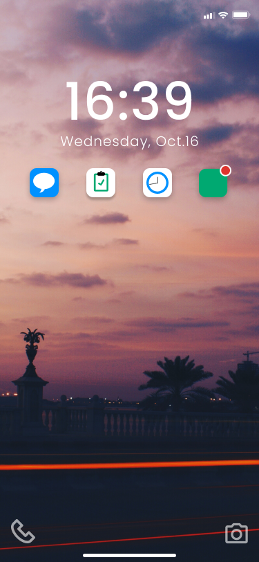

Bloom Operating System
A mobile operating system focusing on mindfulness
In this project, my team and I created a prototype for a mobile operating system with its own version of common apps like clock, task, and mail applications. Our team decided to create an operating system to help users become more mindful of how they use their phones. Our main design principals were Minimal, Purposefully Simple, Interactive, and Informative.
As students and young adults, we may use our phones more than we would actually like to. It is a difficult problem to overcome when certain applications and features encourage their use and reward it, whether it be through notifications or in-app points. We want to reduce those types of choices in our new app designs.
Project Goal
- Coming up with a design language
- Creating design principles
- Creating mood boards
- Conducting research on mindful applications
- Choosing a device for the operating system
Our team started off thinking of apps we would like to use. We also had to think of what kind of users we would like to help. Our team decided to help users within our demographics, like young adults, to be more organized and mindful. Our design language became Bloom. Some of the main goals of the design language were to promote responsibility and help users be well informed. The devices we considered at the time were interactive panels, voice assistants, and even smart glasses. We decided on iphones though, as this is a mobile device that most young adults tend to have.

Persona
Competitor Analysis
To help give us a better idea of which device would be the most helpful for promoting mindfulness, we audited different apps that had to do with mindfulness. By doing this, we also hoped to get a better idea to establish a layout for our lock screen. Below are two of the apps we looked at.
Calm- Rating: 4.2 stars (162K reviews)
- 2017 App of the year by Apple
- Category: Mindfulness
- Offers features like “Sleep Stories” to help users fall asleep as well as ambient sounds like lake and rain noises.
- Take away: A well-designed app that encourages usability and relaxation. Paid subscription can be a problem though.
- Rating: 4.1 stars (45K reviews)
- Category: Lock Screen App
- Offers three different layouts, classic, lollipop and ios. Has customizable fonts. Dedicates a screen to your calendar too.
- Take away: Quick-Launcher for apps and customizable layouts and features encourage users to have it on their android.
Moodboards
From here, we went on to make mood boards for the overall look and feel of our design language. We looked through websites like Dribbble for inspiration.

.png)
With our mood boards made, our design language became Bloom.
The goal of the design language was to promote healthy and informed living, using an intentional and interactive system that helps users live well.
We targeted young adults and individuals wanting to improve their lifestyle.
User Journeys
We decided to focus on the user journey for the task app. We wanted to make sure we could implement our design principles with that application. We thought about doing this by reducing tranistions, to be more purposefully simple.
We added the option for users to prioritize tasks by moving them in order/placing the most important up top. They can also adjust notification settings for individual tasks.
Design Components
Our next task was to focus on creating color palletes, text, and design components to use in our applications.
Text
Colors
App Components
Low-Fidelity wireframes
With our design components created, we could make consistent wireframes for our different applications. During this phase, and for most of the project, I focused on the lock screen and springboard.
Lock Screen
With the lockscreen, we wanted to try to implement the task app to make the lockscreen more interactive and make it less necessary for the user to unlock their phone. While auditing the apps between the group members, we felt this was too clunky. Because of this I instead opted to allow users to check their notifications for individual apps and send quick responses. This would allow users to keep their phone locked in case they need to focus for some time. It is also more organized than just having one long list of notifications.
Springboard
The main feature for the springboard was splitting recently visited apps from the rest of the apps. This was to help reduce the likelihood of the user getting distracted by apps they may not need to use at the moment.
After creating low-fidelity prototypes for different types of applications, we needed to refine certain features for the high-fidelity prototype.
High-Fidelity Prototype


We decided to include color-coded notifications to determine priority, users can set the priority for some, but this should allow users to focus on their most important apps. They can send quick replies to save time and not unlock their phone. This also makes the screen more interactive and informative.
.png)
.png)
To keep the user's tasks readily available, we added the task widget as the default feature when arriving at the springboard. Here, users be reminded of their tasks and they can check off completed tasks for the day.
Reflection
This project taught me that it is okay to make drastic changes compared to what I am familiar with. I was afraid to try new designs because I wanted to stick with what I was used to, not what was necessarily the most usable, especially with the apps I helped design. We also learned that it takes a lot of time striking a balance between encouraging good behavior without making it addicting, especially since we wanted to use gamification for some of our applications, like our social app. We reduced the use of gamification as much as possible because of this, so we could focus on developing the necessary features and prevent addictive habits. I learned about creating components and using those consistently as well.
All High-Fidelity Applications
To download the deliverable showing all the high-fidelity applications in the operating system, click here!
Tasks
- UX/UI Design
- UX Research
Tools
- Figma